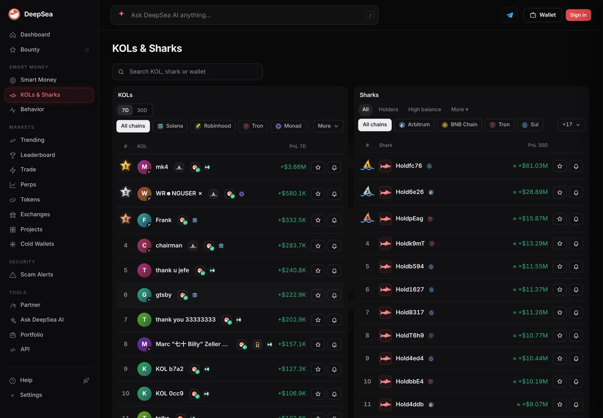

Shark wallets sold $7.14 million of gold token PAXG as it bounced 1.8%, a day after buying
On Tuesday, two shark wallets bought PAXG as it fell. In the latest 24 hours, four sold $7.14 million of the gold token and bought back only $0.53 million.
Key points
- Four shark wallets sold $7.14 million of PAXG, the gold-backed token, and bought $0.53 million in DeepSea's 24-hour table at 12:35 a.m. ET on November 26.
- That is a flip from one day earlier, when two sharks bought $1.41 million as PAXG fell 3.2%.
- PAXG traded at $3,586.58 on CoinGecko, up 1.8% in 24 hours but still 36% below its January 28 record of $5,619.09.
 What DeepSea's data shows
What DeepSea's data shows
DeepSea's 24-hour flow table, built at 12:35 a.m. ET on November 26, puts PAXG near the top of its selling list. Four wallets it tags as sharks sold $7,137,119 of PAXG on Ethereum and bought $534,173, in 3 trades. That leaves them about $6.6 million net sellers.
The other big gold token moved the same way, on a smaller scale: one shark sold $537,949 of Tether Gold (XAUt) and bought none.
DeepSea shows what the wallets did, not who runs them or why. It does not label these wallets.

Data: DeepSea (desea.io), checked November 26, 2026, 12:35 a.m. ET.
From buyers to sellers in one day
PAXG is a token issued by Paxos. Each token stands for one fine troy ounce of gold held in a vault, so its price follows gold.
On Tuesday, LC Insight reported that two shark wallets bought $1.41 million of PAXG as it fell 3.2% to $3,507. In the newest 24-hour window, the picture flipped. Shark selling of PAXG was about 13 times their buying.
The selling came as the price bounced. CoinGecko showed PAXG at $3,586.58 at 12:44 a.m. ET on November 26, up 1.8% in 24 hours and down 3.4% in seven days. It is about 36% below its record of $5,619.09, set on January 28, 2026.
Shark trading in PAXG, DeepSea 24-hour table
US$ million
Source: DeepSea 24-hour flow table, built November 26, 2026, 12:35 a.m. ET.
How big is $7 million for PAXG?
The PAXG token page on Etherscan showed a total supply of 442,918 PAXG held by 87,825 addresses, with an on-chain market value of $1.55 billion, in its snapshot from 6:55 a.m. ET on November 25. At today's price, $7.14 million is about 1,990 PAXG, less than 0.5% of all tokens.
CoinGecko counted $230 million of PAXG trading across markets in 24 hours. So the shark selling was real money, but a small part of the day's trading.
We could not match the largest single sale to one transaction, because Etherscan's token transfer list did not load for us, so we do not name a wallet here.

Why the sharks flipped is unknown
Big wallets switching from buying to selling in a day is common, and the data does not say why. Some may have taken a quick gain on the bounce. Others may have moved money elsewhere. Without labels, any motive would be a guess.
LC Insight analysis
This section is our reading of the facts above, not a statement of fact.
- We think the flip is a reminder that one day of shark buying is not a trend. The same group of wallets can be on both sides within 48 hours.
- Gold tokens track the metal, so PAXG's 36% drop from its January record is a gold story more than a crypto one.
- At $7.14 million, the selling was under 0.5% of PAXG's supply and a small slice of the $230 million traded that day, so it tells us more about these wallets than about demand for gold tokens.
What's next
- Whether PAXG shark selling continues in DeepSea's next 24-hour table.
- Whether PAXG's total supply on Etherscan shrinks, which would show tokens being redeemed for gold or cash.
- PAXG's price against its $3,507 low from Tuesday's report.
Disclaimer. This article is based on public information and the sources listed below as of the update time shown. It is for information only and is not investment, legal or tax advice. Figures may change as companies and authorities publish new data.
Sources
- DeepSea, 24-hour shark flow table (built November 26, 2026, 12:35 a.m. ET)
- Etherscan, PAX Gold (PAXG) token page (snapshot November 25, 2026, 6:55 a.m. ET)
- CoinGecko, PAX Gold price, volume and all-time high (read November 26, 2026, 12:44 a.m. ET)
- LC Insight, PAXG sharks bought $1.41 million (November 25, 2026)